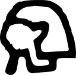

Nꜥw.t
Main information
• Naut
german translation
• [a serpent]
english translation
• entity_name: gods_name
part of speech
• 80370
lemma id
• Wb 2, 207.15; LGG III, 532
bibliographical information
Most relevant occurrences
j Nꜥydj ḫꜥi̯.((n))=((t)) ⸢nb,t⸣
"O Nait-Schlange, du bist erschienen, Herrin (von) . . . !"
IBUBdzUFjkQiRUOVodQv0jgYQro
sentence id
Nꜥw.t in following corpora
Best collocation partners
- nb.t, "Herrin" | "lady; mistress"
- ḫꜥi̯, "aufgehen; erscheinen; glänzen" | "to appear (in glory); to be shining"
- j, "oh!; [Interjektion]" | "oh! (vocative interjection)"
Written forms
N35-D36-M17-M17-D46-Z4-X1-H8-I12: 1 times
𓈖𓂝𓇋𓇋𓂧𓏭𓏏𓆇𓆗
Used hieroglyphs
Dates
Findspots
- Middle Egypt (from Kairo to Assiut): 1 times
Co-textual translations
Part of speech
- entity_name: 1 times
- gods_name: 1 times
 AED-Ancient Egyptian Dictionary
Data transformation, structure etc. by Simon D. Schweitzer
Source:
Teilauszug der Datenbank des Vorhabens "Strukturen und Transformationen des Wortschatzes der ägyptischen Sprache" vom Januar 2018 with contributions of Burkhard Backes, Susanne Beck, Anke Blöbaum, Angela Böhme, Marc Brose, Adelheid Burkhardt, Roberto A. Díaz Hernández, Peter Dils, Roland Enmarch, Frank Feder, Heinz Felber, Silke Grallert, Stefan Grunert, Ingelore Hafemann, Anne Herzberg, John M. Iskander, Ines Köhler, Maxim Kupreyev, Renata Landgrafova, Verena Lepper, Lutz Popko, Alexander Schütze, Simon Schweitzer, Stephan Seidlmayer, Gunnar Sperveslage, Susanne Töpfer, Doris Topmann, Anja Weber
 This work is licensed under a Creative Commons Attribution-ShareAlike 4.0 International License
This work is licensed under a Creative Commons Attribution-ShareAlike 4.0 International License